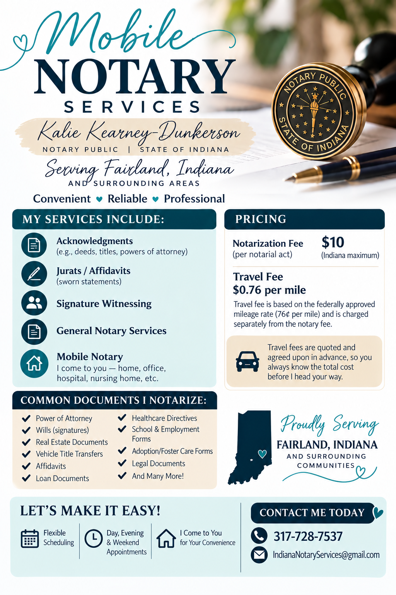
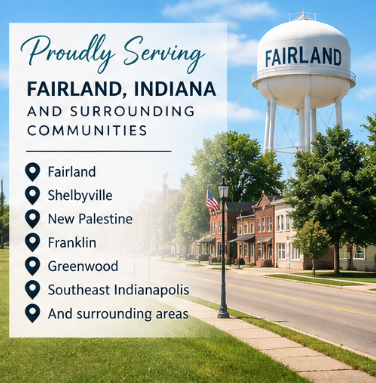

Mobile Notary Services
Serving Fairland, Indiana and surrounding communities. I come to you — home, office, hospital, nursing home, or another agreed location — with evening and weekend availability.
Request an Appointment
Weekday evenings • Extended weekends
Venmo or secure Square card payment
Mobile Notary Services
Meet at your home, workplace, care facility, or another agreed location. Bring the document that needs notarized and acceptable identification.
General Documents
Affidavits, acknowledgments, jurats and other documents requiring an Indiana notarial act.
Real Estate Documents
Mobile notarization for eligible real-estate and property-related documents.
Vehicle & Other Documents
Title-related documents and other paperwork requiring notarization, when the requested notarial act is permitted.
Simple, Upfront Pricing
Your booking page provides an estimated total before you submit your request.
The final notarization charge depends on the actual number of notarial acts performed. Your appointment request is reviewed before payment is requested.
How Booking Works
You won't be asked to hand over cash at the appointment.
Request
Choose your preferred date and time and provide the service details.
Review
I review the request and confirm availability and the meeting location.
Pay Securely
Pay electronically by Venmo or receive a secure Square invoice for card payment.
Meet
Bring the document and acceptable identification to the confirmed appointment.
Fairland & Surrounding Areas
Based in Fairland, Indiana, with mobile service generally available within approximately 20 miles of ZIP code 46126.

Before Your Appointment
- Have the document ready for notarization.
- Have acceptable identification available.
- Do not sign in advance when the notarial act requires signing in the notary's presence.
- If you're unsure which notarial certificate you need, consult the document recipient or an attorney.
Ready to request an appointment?
Submit your preferred time and service details. Your appointment is not final until availability is confirmed.
Book Mobile Notary Service